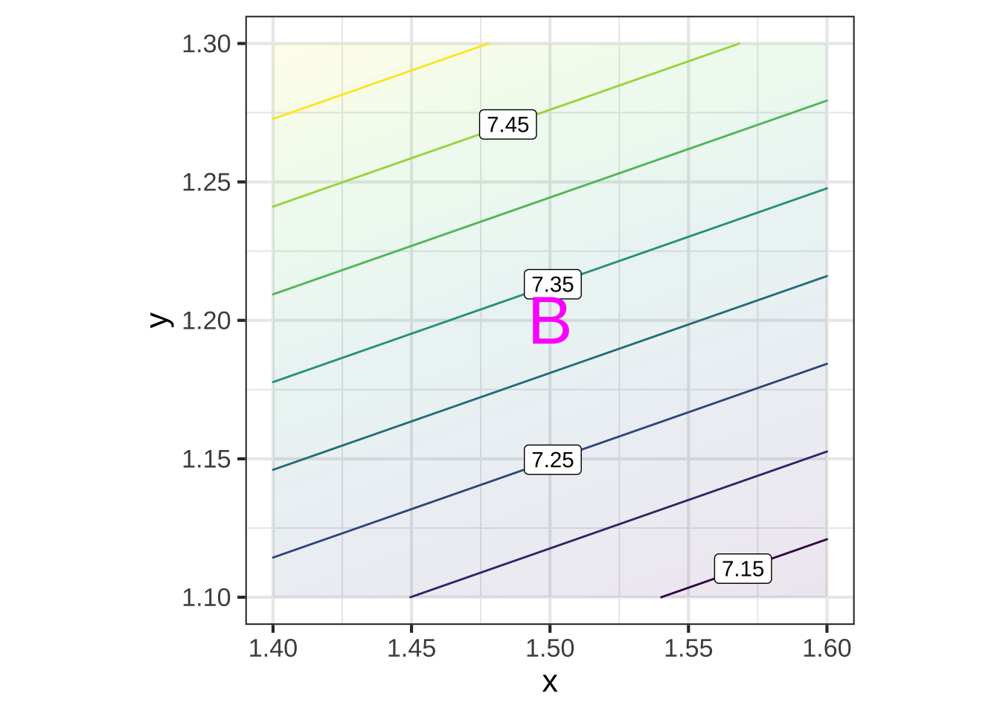
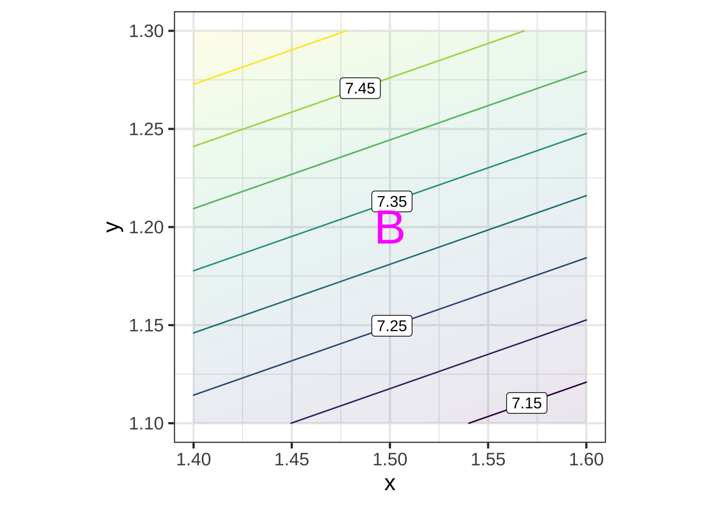
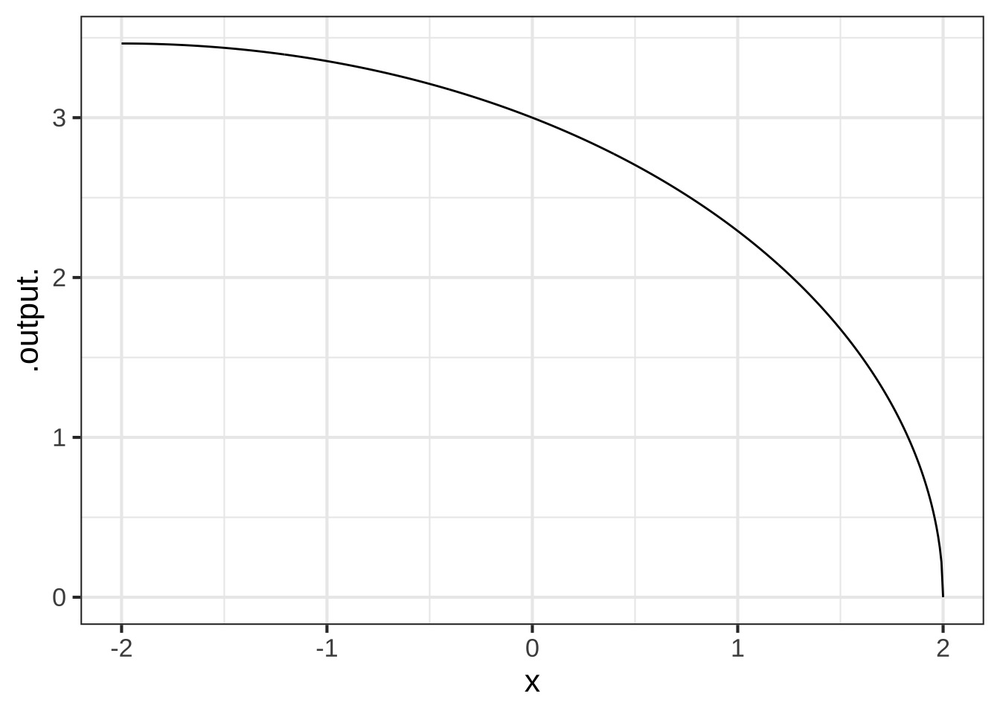

24 Partial change
This is a good time to point out something we have been doing all along, but which has likely been such a persistent component of your mathematics education that you may not have realized that it is a construction.  2600
2600
We have two ways by which we represent functions:
- As a computational algorithm for generating the output from an input(s), typically involving arithmetic and such.
- As a geometrical entity, specifically the graph of a function which can be a curve or, for functions of two inputs, a surface.
These two modes are sometimes intertwined, as when we use the name “line” to refer to a computational object: \(\line(x) \equiv a x + b\).
Unfortunately for functions of two inputs, a surface is hard to present in the formats that are most easily at hand: a piece of paper, a printed page, a computer screen. That’s because a curved surface is naturally a 3-dimensional object, while paper and screens provide two-dimensional images. Consequently, the graphics mode we prefer for presenting functions of two variables is the contour plot, which is not a single geometrical object but a set of many objects: contours, labels, colored tiles. 2605
We’ve been doing calculus on functions of one variable because it is so easy to exploit both the computational mode and the graphical mode. And it might fairly be taken as a basic organizing theme of calculus that 2610
a line segment approximates a curve in a small region around a point.
When figuring out the derivative function \(\partial_x f(x)\) from a graph of \(f(x)\), we find the tangent to the graph at each of many input values, record the slope of the line (and throw away the intercept) and then write down the series of slopes as a function of the input, typically by representing the slope by position along the vertical axis and the corresponding input by position along the horizontal axis. Figure 24.1 shows the process. 2615


Figure 24.1: (A) The graph of a smooth function annotated with small line segments that approximate the function locally. The color of each labeled segment corresponds to the value of \(x\) for that segment. The slope of each segment is written numerically below the segment. (B) The labeled dots show the slope of each segment from (A). The slope is encoded using vertical position (as usual) and carries over the numerical label from (A). Connecting the dots sketches out the derivative of the function in (A).
Panel (A) in Figure 24.1 shows a smooth function \(f(x)\) (thin black curve). To find the function \(\partial_x f(x)\), we take the slope of \(f(x)\) at many closely spaced inputs. In Panel (A), I’ve drawn a short, tangent line segment at the closely points labeled A through V. The slope of each tangent line segment can be calculated by the usual rise-over-run method; the numerical value of the slope is written underneath the segment. To plot the derivative \(\partial_x f(x)\), I have taken the slope information from (A) and plotted it as a function of \(x\). 2620
To restate what you already know, in the neighborhood of any input value \(x_0\), the slope of any local straight-line approximation to \(f(x)\) is given by the value of of \(\partial_x f(x_0)\).
24.1 Calculus on two inputs
Although we use contour plots for good practical reasons, the graph of a function \(g(x,y)\) with two inputs is a surface, as described in Section 6.8. The derivative of \(g(x,y)\) should encode the information needed to approximate the surface at any input \((x,y)\). In particular, we want the derivative of \(g(x,y)\) to tell us the orientation of the tangent plane to the surface.
A tangent plane is infinite in extent. Let’s use the word facet to refer to a little patch of the tangent plane centered at the point of contact. Each facet is flat. (It’s part of a plane!) Figure 24.2 shows some facets tangent to a familiar curved surface. No two of the facets are oriented the same way.

Figure 24.2: A melon as a model of a curved surface such as the graph of a function of two inputs. Each tangent facet has its own orientation. (Disregard the slight curvature of the small pieces of paper. Summer humidity has interfered with my attempt to model a flat facet with a piece of Post-It paper!
Better than a picture of a summer melon, pick up a hardcover book and place it on a curved surface such as a basketball. The book cover is a flat surface: a facet. The orientation of the cover will match the orientation of the surface at the point of tangency. Change the orientation of the cover and you will find that the point of tangency will change correspondingly. 2625
If melons and basketballs are not your style, you can play the same game on an interactive graph of a function of two variables. The snapshot below is a link to an applet that shows the graph of a function as a blue surface. You can specify a point on the surface by setting the value of the (x, y) input using the sliders. Display the tangent plane at that point by check-marking the “Tangent plane” input. (Acknowledgments to Alfredo Sánchez Alberca who wrote the applet using the GeoGebra math visualization system.) 2630

2635
For the purposes of computation by eye, a contour graph of a surface can be easier to deal with. Figure 24.3 shows the contour graph of a smoothly varying function. Three points have been labeled A, B, and C. 2640

Figure 24.3: A function of 2 inputs with 3 specific inputs marked A, B, and C
Zooming in on each of the marked points presents a simpler picture for each of them, although one that is different for each point. Each zoomed-in plot contains almost parallel, almost evenly spaced contours. If the surface had been exactly planar over the entire zoomed-in domain, the contours would be exactly parallel and exactly evenly spaced. We can approach such exact parallelness by zooming in more closely around the labeled point. 2645
Figure 24.4: Zooming in on the neighborhoods of A, B, and C in Figure 24.3 shows a simple, almost planar, local landscape.
Just as the function \(\line(x) \equiv a x + b\) describes a straight line, the function \(\text{plane}(x, y) \equiv a + b x + c y\) describes a plane whose orientation is specified by the value of the parameters \(b\) and \(c\). 2650
In Figure 24.5, the facets tangent to the original surface at A, B, and C are displayed. Comparing Figures 24.4 and 24.5 you can see that each facet has the same orientation as the surface; the contours face in the same way. 2655
 
Figure 24.5: The facets around the points are linear functions, each aligned with the contours near that point in Figure 24.3
Remember that the point of constructing such facets is to generalize the idea of a derivative from a function of one input \(f(x)\) to functions of two and more inputs such as \(g(x,y)\). Just as the derivative \(\partial_x f(x_0)\) reflects the slope of the line tangent to the graph of \(f(x)\) at \(x=x_0\), our plan for the “derivative” of \(g(x_0,y_0)\) is to represent the orientation of the facet tangent to the graph of \(g(x,y)\) at \((x=x_0, y=y_0)\). The question for us now is what information is needed to specify an orientation. 2660
One clue comes from the formula for a function whose graph is a plane oriented in a particular direction:
\[\text{plane}(x,y) \equiv a + b x + cy\]
To explore the roles of the parameters \(b\) and \(c\) in setting the orientation of the line, open a SANDBOX. The scaffolding code generates a particular instance of \(\text{plane}(x,y)\) and plots it in two ways: a contour plot and a surface plot. Change the numerical values of \(b\) and \(c\) and observe how the orientation of the planar surface changes in the graphs. You can also see that the value of \(a\) is irrelevant to the orientation of the plane, just as the intercept of a straight-line graph is irrelevant to the slope of that line. 2665
plane <- makeFun(a + b*x + c*y ~ x + y, a = 1, b = -2.5, c = 1.6)
interactive_plot(plane(x, y) ~ x + y, domain(x=c(-2, 2), y=c(-2, 2))) As always it can be difficult to extract quantitative information from a surface plot. For the example here, you can see that the high-point on the surface is when \(x\) is most negative and \(y\) is most positive. Compare that to the contour plot to verify that that two modes are displaying the same surface. 2670
As always it can be difficult to extract quantitative information from a surface plot. For the example here, you can see that the high-point on the surface is when \(x\) is most negative and \(y\) is most positive. Compare that to the contour plot to verify that that two modes are displaying the same surface. 2670
(Note: The gf_refine(coord_fixed()) part of the contour-plot command makes numerical intervals on the horizontal and vertical axes have the same length.)
An instructive experience is to pick up a rigid, flat object, for instance a smartphone or hardcover book. Hold the object level with pinched fingers at the mid-point of each of the short ends, as shown in Figure 24.6 (left). 2675


Figure 24.6: Combining two simple movements can tip a plane to all sorts of different orientations.
You can tip the object in one direction by raising or lowering one hand. (middle picture) And you can tip the object in the other coordinate direction by rotating the object around the line joining the points grasped by the left and right hands. (right picture) By combining these two motions, you can orient the surface of the object in a wide range of directions. 2680
The purpose of this lesson is to show that two-numbers are sufficient to dictate the orientation of a plane. In terms of Figure 24.6 these are 1) the amount that one hand is raised relative to the other and 2) the angle of rotation around the hand-to-hand axis. 2685
Similarly, in the formula for a plane, the orientation is set by two numbers, \(b\) and \(c\) in \(\text{plane}(x, y) \equiv a + b x + c y\).
How to find the right \(b\) and \(c\) for the tangent facet to a function \(g(x,y)\) at a specific input \((x_0, y_0)\)? Taking slices of \(g(x,y)\) provides the answer. In particular, these two slices: \(\text{slice}_1(x) \equiv g(x, y_0) = a + b\, x + c\, y_0 \\ \text{slice}_2(y) \equiv g(x_0, y) = a + b x_0 + c\, y\)
Look carefully at the formulas for the slices. In \(\text{slice}_1(x)\), the value of \(y\) is being held constant at \(y=y_0\). Similarly, in \(\text{slice}_2(y)\) the value of \(x\) is held constant at \(x=x_0\). 2690
The parameters \(b\) and \(c\) can be read out from the derivatives of the respective slices:
\[b = \partial_x \text{slice}_1(x)\left.\strut\right|_{x=x_0} \ \ \text{and}\ \ c=\partial_y \text{slice}_2(y)\left.\strut\right|_{y=y_0}\]
These derivatives of slice functions are called partial derivatives. The word “partial” refers to examining just one input at a time. Here, we’re evaluating the partial derivative functions at a specific inputs, \(x=x_0\) or \(y=y_0\). 2695
You don’t need to create the slices explicitly in order to calculate the partial derivatives. Simply differentiate \(g(x, y)\) with respect to \(x\) in order to get parameter \(b\) and differentiate \(g(x, y)\) with respect to \(y\) to get parameter \(c\). To demonstrate, we’ll make use of the sum rule: \[\partial_x g(x, y) = \underbrace{\partial_x a}_{=0} + \underbrace{\partial_x b x}_{=b} + \underbrace{\partial_x cy}_{=0} = b\] Similarly, \[\partial_y g(x, y) = \underbrace{\partial_y a}_{=0} + \underbrace{\partial_y b x}_{=0} + \underbrace{\partial_y cy}_{=c} = c\]
Get in the habit of noticing the subscript on the differentiation symbol \(\partial\). When taking, for instance, \(\partial_y f(x,y,z, \ldots)\), all variables other than \(y\) are to be held constant. Some examples: 2700
\[\partial_y 3 x^2 = 0\ \ \text{but}\ \ \ \partial_x 3 x^2 = 6x\\ \ \\ \partial_y 2 x^2 y = 2x^2\ \ \text{but}\ \ \ \partial_x 2 x^2 y = 4 x y \]
24.2 All other things being equal …
Recall that the derivative of a function of one variable, say, \(\partial_x f(x)\) tells you, at each possible value of the input \(x\), how much the output will change proportional to a small change in the value of the input. This is exactly what the first-order polynomial approximation (that is, the linear approximation), is saying: for small \(dx\), \[f(x+dx) = f(x) + \partial_x f(x) \times dx\] The same logic applies for functions of two inputs: \[g(x + \color{magenta}{dx}, y) = g(x,y) + \color{magenta}{\partial_x} g(x,y) \times \color{magenta}{dx}\\ \text{and} \\ g(x, y+\color{brown}{dy}) = g(x,y) + \color{brown}{\partial_y} g(x,y) \times \color{brown}{dy}\]
Each of these statements is about changing one input while holding the other input(s) constant. Or, as the more familiar expression goes, "The effect of changing one input all other things being equal. 2705
- [Deriv-4a] Understand that there are many different slopes at any point of a non-constant function of 2 or more variables.
- [Deriv-4b] Calculate partial derivatives on a contour plot
- [Deriv-4c] Understand “partial derivative” as “changing one input while holding constant all the other inputs.”
- [Deriv-8b] Calculate partial derivatives by “changing one input while holding constant all the other inputs.”
- [Deriv-4d] Know the three properties of gradient vectors
Everything we’ve said about differentiation rules applies not just to functions of one input, \(f(x)\), but to functions with two or more inputs, \(g(x,y)\), \(h(x,y,z)\) and so on. 2710
24.3 Gradient vector
For functions of two inputs, there are two partial derivatives. For functions of three inputs, there are three partial derivatives. We can, of course, collect the partial derivatives into Cartesian coordinate form. This collection is called the gradient vector. 2715
Just as our notation for differences (\(\cal D\)) and derivatives (\(\partial\)) involves unusual typography on the letter “D,” the notation for the gradient involves such unusual typography although this time on \(\Delta\), the Greek version of “D.” For the gradient symbol, turn \(\Delta\) on its head: \(\nabla\). That is, \[\nabla g(x,y) \equiv \left(\stackrel\strut\strut\delta_x g(x,y), \ \ \delta_y g(x,y)\right)\]
Note that \(\nabla g(x,y)\) is a function of both \(x\) and \(y\), so in general the gradient vector differs from place to place in the function’s domain.
The graphics convention for drawing a gradient vector for a particular input, that is, \(\nabla g(x_0, y_0)\), puts an arrow with its root at \((x_0, y_0)\), pointing in direction \(\nabla g(x_0, y_0)\), as in Figure 24.7. 2720
Figure 24.7: The gradient vector \(\nabla g(x=1,y=2)\). The vector points in the steepest uphill direction. Consequently, it is perpendicular to the contour passing through its root.
A gradient field (see Figure 24.8) is the value of the gradient vector at each point in the function’s domain. Graphically, in order to prevent over-crowding, the vectors are drawn at discrete points. The lengths of the drawn vectors are set proportional to the numerical length of \(\nabla g(x, y)\), so a short vector means the surface is relatively level, a long vector means the surface is relatively steep. 2725
Figure 24.8: A plot of the gradient field \(\nabla g(x,y)\).
Exercise 24.02: 9iowVB
Open a sandbox and use the following commands to make a “surface plot” and a contour plot of a function \(g(x)\) centered on the reference point \((x_0\!=\!0,\, y_0\!=\!0)\).
g <- rfun( ~ x + y, seed = 802, n = 15)
x0 <- 0
y0 <- 0
size <- 5
interactive_plot(g(x, y) ~ x + y,
domain(x = x0 + size*c(-1, 1),
y = y0 + size*c(-1, 1)))
contour_plot(g(x, y) ~ x + y,
domain(x = x0 + size*c(-1, 1),
y = y0 + size*c(-1, 1)))Rotate the graphic around until you feel comfortable with the controls.
By making size smaller, you can zoom in around the reference point. Zoom in gradually (say, size = 1.0, 0.5, 0.1, 0.05, 0.01) until you reach a point where the surface plot is (practically) a pretty simple inclined plane.
From either the surface plot or from the contour plot, zoomed in so that the graph shows an inclined plane, figure out the sign of \(\partial_x g(0,0)\) and \(\partial_y g(0,0)\).
Question A Which answer best describes the signs of the partial derivatives of \(g(x,y)\) at the reference point \((x_0=0, y_0=0)\)?
-
\(\partial_x g(0,0)\) is pos, \(\partial_y g(0,0)\) is pos ︎✘
-
\(\partial_x g(0,0)\) is pos, \(\partial_y g(0,0)\) is neg ︎✘
-
\(\partial_x g(0,0)\) is neg, \(\partial_y g(0,0)\) is neg ︎✘
-
\(\partial_x g(0,0)\) is neg, \(\partial_y g(0,0)\) is pos. Good.
- \(\partial_x g(0,0)\) is 0, \(\partial_y g(0,0)\) is pos ︎✘
Exercise 24.04: qdkw
Consider this close up of a function around a reference point at the center of the graph.
By eye, estimate these derivatives of the function at the reference point \((x_0=-2, y_0=-5)\).
Question A What is the numerical value of \(\partial_x g(x,y)\) at the reference point?
-1 ︎✘ -0.50 ︎✘ -0.25 ︎✘ 0 ︎✘ 0.25 ︎✘ 0.50 Good. 1 ︎✘
Question B What is the numerical value of \(\partial_y g(x,y)\) at the reference point?
-1 ︎✘ -0.50 ︎✘ -0.25 ︎✘ 0 ︎✘ 0.25 ︎✘ 0.50 ︎✘ 1 Excellent!
The next questions ask about second-order partial derivatives. As you know, the second derivative is about how the first derivative changes with x or y. Insofar as the function is a simple inclined plane, where the contours would be straight, parallel, and evenly spaced, the second derivatives would all be zero. But you can see that it is not such a plane: the contours curve a bit.
In determining the second derivatives by eye from the graph, you are encouraged to compare first derivatives at the opposing edges of the graph, as opposed to at very nearby points.
Question C What is the sign of \(\partial_{xx} g(x,y)\) at the reference point?
negative Excellent! positive ︎✘
Question D What is the sign of \(\partial_{yy} g(x,y)\) at the reference point?
negative ︎✘ positive Correct.
Question E What is the sign of \(\partial_{xy} g(x,y)\) at the reference point?
negative ︎✘ positive Good.
Question F What is the sign of \(\partial_{yx} g(x,y)\) at the reference point?
negative ︎✘ positive Right!Exercise 24.06: uekses
At numerous occasions in your professional life, you will be in one or both of these positions:
- You are a decision-maker being presented with the results of an analysis conducted by a team of unknown reliability, and you need to figure out whether what they are telling you is credible.
- You are a member of the analysis team needing to demonstrate to the decision-maker that your work should be believed.
As an example, consider one of the functions presented in a comedy book, Geek Logic: 50 Foolproof Equations for Everyday Life (2006), by Garth Sundem. The particular function we’ll consider here is Dr(), intended to help answer the question, “Should you go to the doctor?”
\[\mbox{Dr}(d, c, p, e, n, s) = \frac{\frac{s^2}{2} + e(n-e)}{100 - 3(d + \frac{p^3}{70} - c)}\] where
- \(d\) = How many days in the past month have you been incapacitated? \(d_0 \equiv 3\)
- \(c\) = Does the issue seem to be getting better or worse. (-10 to 10 with -10 being “circling the drain” and 10 being “dramatic improvement”) \(c_0 \equiv -2\)
- \(p\) = How much pain or discomfort are you currently experiencing? (1-10 with 10 being “currently holding detached toe in Ziploc bag”) \(p_0 = 3\)
- \(e\) = How embarrassing is this issue? (1-10 with 10 being “slipped on ice and fell on 1972 Mercedes-Benz hood ornament, which is now part of my body”) \(e_0 = 4\)
- \(n\) = How noticeable is the issue? (1-10 with 10 being “fell asleep on waffle iron”) \(n_0 = 5\)
- \(s\) = How serious does the issue seem? (1-10 with 10 being “may well have nail embedded in frontal lobe [of brain]”) \(s_0 = 3\)
Although the function is offered tongue-in-cheek, let’s examine it to see if it even roughly matches common sense. The tool we will use relates to low-order polynomial approximation around a reference point and examining appropriate partial derivatives. To save time, we stipulate a reference point for you, noted in the description of variables above.
The code creates an R implementation of the function that is set up so that the default values of the variables are those at the given reference point. You can use this in a sandbox to try different changes in each of the input quantities.
According to the instructions in the book, if Dr()\(> 1\), you should go to the doctor.
Essay question tmp-14: 1) The value of Dr() at the reference point is 0.10, indicating that you shouldn’t go to the doctor. But we don’t yet know whether 0.10 is very close to the decision threshold of 1 or very far away. Describe a reasonable way to figure this out. Report your description and the results here.
Essay question tmp-15: There are six inputs to the function. Go through the list of all six and (without thinking too hard about it) write down for all of them your intuitive sense of whether an increase of one point in that input should raise or lower the output of Dr() at the reference point. Also write down whether you think the input should be a large or small determinant of whether to go to the doctor. (You don’t need to refer to the Dr() function itself, just to your own intuitive sense of what should be the effect of each of the inputs.)
The operator D() can calculate partial derivatives. You can calculate the value of a partial derivative very easily at the reference point, using an expression like this, which gives the value of the partial of Dr() with respect to input \(s\) at the reference point:
D(Dr(s = s) ~ s)()We’re now going to use these partial derivatives to compare your intuition about going to the doctor to what the function has to say. Of course, we don’t know yet whether the function is reasonable, so don’t be disappointed if your intuition conflicts with the function.
Essay question tmp-16: Calculate the numerical value of each of the partial derivatives at the reference point. List them here and say, for each one, whether it accords with your intuition.Exercise 24.08: wkd83
Here are contour maps of several functions with input \(x\) and \(y\). Underneath them are plots of the gradient field of the functions, but they are not in order. Your job is to match the contour plot with the gradient field.


Question A Which contour plot matches gradient field 1?
A ︎✘ B ︎✘ C ︎✘ D ︎✘ E ︎✘ F Excellent!
Question B Which contour plot matches gradient field 2?
A Correct. B ︎✘ C ︎✘ D ︎✘ E ︎✘ F ︎✘ Question C Which contour plot matches gradient field 3?
A ︎✘ B ︎✘ C ︎✘ D Good. E ︎✘ F ︎✘ Question D Which contour plot matches gradient field 4?
A ︎✘ B ︎✘ C Good. D ︎✘ E ︎✘ F ︎✘ Question E Which contour plot matches gradient field 5?
A ︎✘ B ︎✘ C ︎✘ D ︎✘ E Nice! F ︎✘ Question F Which contour plot matches gradient field 6?
A ︎✘ B Good. C ︎✘ D ︎✘ E ︎✘ F ︎✘Exercise 24.10: lkwciw


Question A What’s wrong with gradient field 1?
- arrows point down the hill instead of up it ︎✘
- magnitude of arrows are wrong, but direction is right Right!
- arrows don’t point in the right direction ︎✘
- nothing is wrong ︎✘
Question B What’s wrong with gradient field 2?
- arrows point down the hill instead of up it Excellent!
- magnitude of arrows are wrong, but direction is right ︎✘
- arrows don’t point in the right direction ︎✘
- nothing is wrong ︎✘
Question C What’s wrong with gradient field 3?
- arrows point down the hill instead of up it ︎✘
- magnitude of arrows are wrong, but direction is right ︎✘
- arrows don’t point in the right direction ︎✘
- nothing is wrong Correct.
Question D What’s wrong with gradient field 4?
- arrows point down the hill instead of up it ︎✘
- magnitude of arrows are wrong, but direction is right ︎✘
- arrows don’t point in the right direction Good.
- nothing is wrong ︎✘
Exercise 24.12: xdkw
It’s relatively easy to assess partial derivatives when you know the gradient. After all, the gradient is the vector of \((\partial_x\,f(x,y), \partial_y f(x,y))\). To train your eye, here’s a contour plot and a corresponding gradient plot.

Question A What is the rule for determining \(\partial_x f(x,y)\) from the direction of the gradient vector?
- If the vector has a component pointing right, \(\partial_x f\) is positive. Right!
- If the vector has a component pointing left, \(\partial_x f\) is positive ︎✘ If the gradient points left, then uphill is to the left. So the function is increasing from right to left. That’s a negative partial derivative.
- If the vector has a vertical component pointing up, \(\partial_x f\) is positive. ︎✘ This would be true for the partial derivative with respect to \(y\), but that has to relevance to the partial with respect to \(x\).
- If the vector has a component pointing downward, the partial derivative \(\partial_x f\) is positive. ︎✘ No, but the partial with respect to \(y\) would be negative.
Using the gradient field depicted below, figure out the sign of the partial derivatives at the labeled points. We’ll use “neg” to refer to negative partial derivatives, “pos” to refer to positive partial derivatives, and “zero” to refer to partials that are so small that you can’t visually distinguish them from zero.

Question B Which is \(\partial_y f\) at point A?
neg Excellent! zero ︎✘ pos ︎✘
Question C Which is \(\partial_x f\) at point A?
neg ︎✘ zero ︎✘ pos Nice!
Question D Which is \(\partial_x f\) at point B?
neg ︎✘ zero ︎✘ pos Nice!
Question E Which is \(\partial_x f\) at point C?
neg ︎✘ zero Nice! pos ︎✘
Question F Which is \(\partial_y f\) at point E?
neg ︎✘ zero ︎✘ pos Good.
Question G Which is \(\partial_x f\) at point E?
neg Excellent! zero ︎✘ pos ︎✘
Question H At which letter are both the partial with respect to \(x\) and the partial with respect to \(y\) negative.?
A ︎✘ B ︎✘ C ︎✘ D ︎✘ E ︎✘ F ︎✘ none of them Nice!Exercise 24.14: vkdlw
For almost everyone, a house is too expensive to buy with cash, so people need to borrow money. The usual form of the loan is called a “mortgage.” Mortgages extend over many years and involve paying a fixed amount each month. That amount is calculated so that, by paying it each month for the duration of the mortgage, the last payment will completely repay the amount borrowed plus the accumulated interest.
The monthly mortgage payment in dollars, \(P\), for a house is a function of three variables, \[P(A, r, N)\] where \(A\) is the amount borrowed in dollars, \(r\) is the interest rate (per year), and \(N\) is the number of years before the mortgage is paid off.
A studio apartment is selling for $220,000. You will need to borrow $184,000 to make the purchase.
Question A Suppose \(P(184000,4,10) = 2180.16\). What does this tell you in financial terms?
- The monthly cost of borrowing $184,000 for 10 years at 4% interest per year. Correct.
- The monthly cost of borrowing $184,000 for 4 years at 10% interest per year. ︎✘ You’ve got the order of the argument wrong.
- The annual cost of the mortgage at 4% interest for 10 years. ︎✘ The output of the function \(P()\) is the monthly mortgage payment.
- The annual cost of the mortgage at 10% interest for 4 years ︎✘ The output of the function \(P()\) is the monthly mortgage payment.
Question B What would you expect about the quantity \(\partial P / \partial A\)?
- It’s positive Correct. If you borrow more money, holding mortgage duration and interest rate constant, you are going to have to pay more each month.
- It’s zero ︎✘
- It’s negative ︎✘
Question C What would you expect about the quantity \(\partial P / \partial N\)?
- It’s positive ︎✘
- It’s zero ︎✘
- It’s negative Right! If you borrow the same amount of money at the same interest rate, but have more years to pay it back, your monthly payment will be smaller.
Question D Suppose \(\partial P / \partial r (184000,4,30) =\) $145.64. What is the financial significance of the number $145.65??
- If the interest rate \(r\) went up from 4 to 5, the monthly payment would increase by $145.65. ︎✘ This is a perfectly reasonable answer, but … recall that the derivative gives the rate of increase in the output of the function when the input changes by a tiny amount. It turns out that a 1 percentage point increase in interest rate is a very large amount of change.
- If the interest rate \(r\) went up from 4 to 4.001, the monthly payment would increase by $145.65. ︎✘ This is indeed a small change in interest rate, but the value of the derivative is the rate of increase, not the increase itself.
- If the interest rate \(r\) went up from 4 to 4.001, the monthly payment would increase by $0.001 imes $145.65. Nice! You might think that nobody would be concerned about such a small increase in interest rate. But knowing the result for each very small increase allows us to calculate what would be the impact of a large increase by a process called integration.
Exercise 24.16: 72ldw
In economic theory, the quantity of the demand for any good is a decreasing function of the price of that good and an increasing function of the price of a competing good.
The classical example is that apple juice competes with orange juice. The demand for orange juice is in units of thousands of liters of orange juice. The price is in units of dollars per liter.
Here’s a graph with the input variables unlabeled.

The concept of partial derivatives makes it much easier to think about the situation. There are two partial derivative functions relevant to the function in the graph. Well denote the input variables apple and orange, but remember that these are the prices of those commodities in dollars per liter.
- \(\partial_\mbox{apple} \mbox{demand}()\) – how the demand changes when apple-juice price goes up, holding orange-juice price constant. (Another notation that is more verbose but perhaps easier to read \(\frac{\partial\, \mbox{demand}}{\partial\,\mbox{apple}}\))
- \(\partial_\mbox{orange} \mbox{demand}()\) – how the demand changes when orange-juice price goes up, holding apple-juice price constant. (Another notation: \(\frac{\partial\, \mbox{demand}}{\partial\,\mbox{orange}}\))
Notice that the notation names both the output and the single input which is to be changed–the other inputs will be held constant.
The first paragraph of this problem gives the economic theory which amounts to saying that one of the partial derivatives is positive and the other negative.
Question A What are the numbers labeling the contours?
- Quantity of orange juice. Right!
- Price of apple juice. ︎✘ The prices of apple juice and of orange juice are the inputs to the function. Input values are displayed as position on an axis. The contour labels identify the output value for any input that corresponds to a point on the contour.
- Price of orange juice. ︎✘ The prices of apple juice and of orange juice are the inputs to the function. Input values are displayed as position on an axis. The contour labels identify the output value for any input that corresponds to a point on the contour.
- Quantity of apple juice. ︎✘ A reasonable answer, but the function output is the quantity of orange juice.
Question B What is the proper translation of the notation \(\partial_\mbox{apple}\mbox{demand}()\)?
- The partial derivative of orange-juice demand with repect to apple-juice price Nice!
- The partial derivative of apple-juice price with repect to demand for orange juice ︎✘ Derivatives are always with respect to an input variable. Demand for orange juice is the output variable.
- The partial derivative of apple-juice demand *with respect to price of apple juice ︎✘ This problem is about orange-juice demand, not apple-juice demand.
- The partial derivative of orange-juice price with respect to apple-juice price. ︎✘ Both of these are input variables to the demand function. A partial derivative is always about the change in output when one of the inputs changes, not the change in one input when another input changes.
Question C According to the economic theory described above, one of the partial derivatives will be positive and the other negative. Which will be positive.
-
\(\partial_\mbox{apple} \mbox{demand}()\) Good.
- \(\partial_\mbox{orange} \mbox{demand}()\) ︎✘ If orange juice prices went up, would you drink more orange juice?
Question D What does the vertical axis measure?
- Price of orange juice Right!
- Quantity of apple juice ︎✘
- Quantity of orange juice ︎✘
- Price of apple juice ︎✘
Question E Consider the magnitude (absolute value) of the partial derivative of demand with respect to orange-juice price. Is this magnitude greater toward the top of the graph or the bottom?
- top Nice!
- bottom ︎✘ The horizontal distance between contour lines is larger at the bottom of the graph than at the top. Far-apart contours mean that the function is flatter.
- neither ︎✘ Remember, we’re talking about the partial derivative with respect to orange juice price. That corresponds to the slope when moving in a horizontal direction.
Exercise 24.18: oekse
The contour plot of function \(g(y, z)\) is overlaid with vectors. The black vector is a correct representation of the gradient (at the root of the vector). The other vectors are also supposed to represent the gradient, but might have something wrong with them (or might not). You’re job is to say what’s wrong with each of those vectors.
Question A What’s wrong with the red vector?
- nothing ︎✘
- too long Excellent! The red vector is located in a place where the function is almost level. You can tell this because the contour lines are spaced far apart. The magnitude of the gradient will be small in such an area. But here, the red vector is even longer than the black vector, even though black is in a very steep area (with closely spaced contours).
- too short ︎✘
- points downhill ︎✘
- points uphill ︎✘ Pointing uphill is what gradient vectors do! No problem with this.
- wrong direction entirely ︎✘
Question B What’s wrong with the green vector?
- nothing ︎✘
- too long ︎✘ Note that the vector reflects the steepness at the point where the root of the vector is drawn. The root of the green vector is in an area where the contour lines are spaced similarly to the area near the root of the black vector. So it’s correct that the length of the green vector is similar to the length of the black vector.
- too short ︎✘
- points downhill Good. The root of the green vector is near contour=4, the head at contour=2. So the vector is incorrectly pointing downhill. Gradients point in the steepest direction uphill.
- points uphill ︎✘ Pointing uphill is what gradient vectors do! No problem with this.
- wrong direction entirely ︎✘
Question C What’s wrong with the blue vector?
- nothing Nice!
- too long ︎✘
- too short ︎✘ The blue vector is in a very flat area of the function. That’s why it’s so short.
- points downhill ︎✘
- points uphill ︎✘ Pointing uphill is what gradient vectors do! No problem with this.
- wrong direction entirely ︎✘
Question D What’s wrong with the orange vector?
- nothing ︎✘
- too long ︎✘
- too short ︎✘
- points downhill ︎✘
- points uphill ︎✘
- wrong direction entirely Nice! Gradient vectors should be perpendicular to nearby contours and should point uphill. The orange vector is neither
Question E What’s wrong with the gray vector?
- nothing ︎✘
- too long ︎✘
- too short Nice! The function is practically as steep at the root of the gray vector as it is at the root of the black vector. (You can tell this from the spacing of the contour lines.) So the magnitude of the gray vector should be just about the same as the magnitude of the black vector.
- points downhill ︎✘
- points uphill ︎✘
Exercise 24.20: uifJjv
The big contribution of calculus to the process of optimization is the gradient vector. The gradient vector, as you know, points in the steepest direction uphill. Since functions can have complicated shapes, the gradient does not generally point directly to the maximum. However, if you start at a point and take a small step in the direction of the gradient, the value of the objective function will increase. Then repeat the process and keep repeating until the gradient has zero length (or close to zero).
The sandbox has instructions in R for
- generating a function \(f(x, y)\)
- finding the \(x\)- and \(y\)-components of the gradient vector
- setting up differential equations whose dynamics are “velocity is the gradient.” (Remember, velocity is a vector, as is the gradient.) This system just walks uphill.
- setting up differential equations whose dynamics are “velocity is negative the gradient.”
- plotting the \(f(x,y)\), the gradient field, and the two solutions to the differential equations.
f <<- rfun( ~ x + y, seed=103)
dx_f <<- D(f(x, y) ~ x)
dy_f <<- D(f(x, y) ~ y)
soln1 <- integrateODE(dx ~ dx_f(x=x, y=y),
dy ~ dy_f(x=x, y=y),
x = 1, y = -3,
tdur = list(from=0, to=10, dt=0.1))
soln2 <- integrateODE(dx ~ -dx_f(x=x, y=y),
dy ~ -dy_f(x=x, y=y),
x = -2, y = 0.75,
tdur = list(from=0, to=10, dt=0.1))
contour_plot(f(x, y) ~ x + y, domain(x=c(-5, 5), y=c(-5, 5))) %>%
gradient_plot(f(x, y) ~ x + y) %>%
traj_plot(y(t) ~ x(t), soln1, color="dodgerblue") %>%
traj_plot(y(t) ~ x(t), soln2, color="orange3")
Question A The two trajectories are shown in blue and red respectively. Each starts at the point labelled “0” and ends at the point labelled “10.” How does movement along each trajectory correspond to the gradient field?
red uphill, blue downhill ︎✘ red downhill, blue uphill Excellent! both downhill ︎✘ both uphill ︎✘
Question B Did the trajectories reach a local maximum or minimum?
- red reached max, blue reached min ︎✘
- red reached min, blue reached max Nice!
- both reached max ︎✘
- both reached min ︎✘
Question C There’s a local minimum shown on the graph at about \((x=0, y=-1)\). Neither of the trajectories reached this minimum. Imagine starting a new trajectory at a point \((x=2, y=0)\). Will it reach the local minimum near \((x=0, y=-1)\)?
- Yes, so long as you walk against the gradient. Correct.
- Yes, so long as you walk along the gradient. ︎✘
- No ︎✘
In the code originally in the sandbox, the trajectory was constructed with 100 Euler steps; the time interval runs from \(t=0\) to \(t=10\) and \(dt = 0.1\). Practical optimization algorithms are designed to take steps that are as large as feasible. But if the steps are too large, the trajectory can overshoot the target. Dealing with this problem is a major feature of optimization algorithms and is non-trivial.
Purely to illustrate, we can investigate stepsize by changing dt in the two integrateODE() expressions.
Question D What happens when you set dt=1.0?
- Both trajectories smoothly curve around and reach the maximum or minimum. ︎✘
- The trajectories reach the maximum or minimum, but in a clunky, jerkwise fashion. Excellent!
- The trajectories oscillate around the maximum or minimum without settling down. ︎✘
- Everything falls apart and the trajectories leave the domain of interest. ︎✘
Question E What happens when you set dt=10.0?
- Both trajectories smoothly curve around and reach the maximum or minimum. ︎✘
- The trajectories reach the maximum or minimum, but in a clunky, jerkwise fashion. ︎✘
- The trajectories oscillate around the maximum or minimum without settling down. ︎✘
- Everything falls apart and the trajectories leave the domain of interest. Good.
24.4 Algorithmic optimization
In Chapter 23 we explored how to find an argmin of a function \(f(x)\) with one input. Finding the argmin is easy and intuitive if you have a graph of \(f(x)\): just look for the top of the hill.
Figure 24.9 shows an example. With a bit of practice you can see that the “top of the hill” is at roughly \((x=1, y=1)\) whereat the function takes on a value somewhat larger than 16.

Figure 24.9: For an objective function with two inputs, the argmax can be found by looking for the location of the top of the hill. In general, the contour near the top of a hill will be a closed round shape.
Many optimization problems involve objective functions with several or many inputs. Regrettably, it becomes very difficult to graph functions with 3 or more inputs. So, we can’t rely on our visual intuition to find the top of the hill.
The key to optimization problems with many inputs is the derivative of the function. Figure 24.10 shows the gradient field of the same terrain graphed in Figure 24.9. Even without seeing the surface or the contours, you can get to the top of the hill by picking a starting point and following the contours. Since there can be many hills in a complicated terrain, this approach will get you to the one “closest” to your starting point. In practice, modelers repeat the method for many different starting points until they reach a hilltop that’s high enough for their purposes.

Figure 24.10: You don’t need the contours to find the top of the hill. Just follow the gradient vectors!
Let’s lay out the algorithm for using the gradient to find an argmax. In every optimization problem we assume we know the objective function \(g(x, y, z, ...)\) and can compute the output of the function for any valid inputs.
Step 1 We pick two starting points near to each other: \({\mathbf X}_0 = (x_0, y_0, z_0, \ldots)\) and \({\mathbf X}_2 = (x_1, y_1, z_1, \ldots)\). (We’re using the names \({\mathbf X}_0\) and \({\mathbf X}_1\) to denote the starting points, just as we might denote a place on Earth by a name like “Chicago.”
Step 2 By evaluating \(g()\) at \({\mathbf X}_0\) and \({\mathbf X}_1\) we can find the gradient vector near \({\mathbf X}_1\).
\[\partial_\color{magenta}{x} g({\mathbf X}_1) \equiv \partial_\color{magenta}{x} g(x_1, y_1, z_1, \ldots) = \frac{g(\color{magenta}{x_1}, y_1, z_1, \ldots) - g(\color{magenta}{x_0}, y_1, z_1, \ldots)}{\color{magenta}{x_1 - x_0}}\\ \,\\ \partial_\color{brown}{y} g({\mathbf X}_1) \equiv\partial_\color{brown}{y} g(x_1, y_1, z_1, \ldots) = \frac{g(x_1, \color{brown}{y_1}, z_1, \ldots) - g(x_1, \color{brown}{y_0}, z_1, \ldots)}{\color{brown}{y_1 - y_0}}\\ \,\\ \partial_\color{darkorange}{z} g({\mathbf X}_1) \equiv\partial_\color{darkorange}{z} g(x_1, y_1, z_1, \ldots) = \frac{g(x_1, y_1, \color{darkorange}{z_1}, \ldots) - g(x_1, y_1, \color{darkorange}{z_0}, \ldots)}{\color{darkorange}{z_1 - z_0}}\\ \,\\ \ldots\]
Step 3 Pick a small number \(h\) and compute the coordinates of a new point \[{\mathbf X}_2 \equiv ( \color{magenta}{x_1} + h \partial_{\color{magenta}{x}} g({\mathbf X}_1), \color{brown}{y_1} + h \partial_{\color{brown}{y}} g({\mathbf X}_1), \color{darkorange}{z_1} + h \partial_{\color{darkorange}{z}} g({\mathbf X}_1), \ldots) \] \({\mathbf X}_2\) is located a small distance from \({\mathbf X}_1\) in the direction of the gradient vector.
Step 4 If \(g({\mathbf X}_2) \approx g({\mathbf X}_1)\) then the gradient vector must be very close to zero. We can stop the algorithm, giving the argmax result as \({\mathbf X}_2\). Otherwise, go back to Step 2, but using \({\mathbf X}_1\) in place of \({\mathbf X}_0\) and using \({\mathbf{X}_2}\) in place of \({\mathbf{X}_1}\).
There are many variations on this algorithm that seek to reduce the number of calculations, avoid overstepping the argmax, etc. Collectively, the algorithms are called gradient ascent or, in more familiar language, “walking uphill one step at a time.”